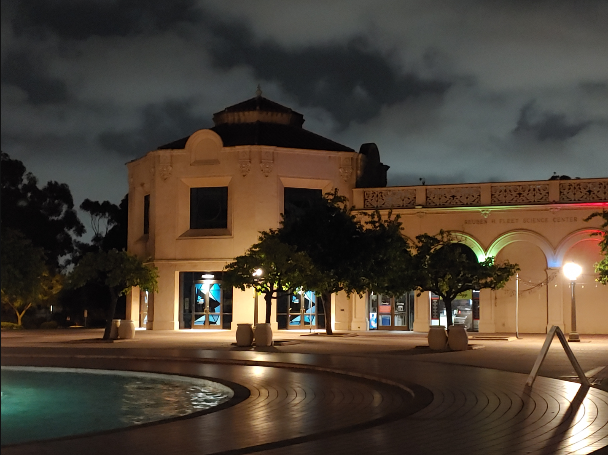

Journal 1 | Main
Latest
~ April 7, 2021 ~
Wednesday
It's assignments day again. I have Lab today, but its not attendance based, its mostly like a mini project. I have to do build a somewhat simple website that stores journal entries. I've never used HTML before so I hope my website comes out nice. Its slightly overwhelming because there's a lot of elements I must add. I made a checklist to make sure I include, but I hope I don't miss any of them.
I also worked on my circuits lab today. I had to restart on some components of it since I lost progress, from my previous Matlab online session. I thought Matlab autosaved, but I guess I was wrong. It turns out any live script I write must be manually saved once before it gets autosaved. I'll be sure for next time. I can't waste an extra 30 minutes again. I was lucky I didn't get so far last time.
All cool part of my lab was that I got to design a filter that echoed my voice
Previous Entries
April 6, 2021
Tuesday
Lecture Day! Lecture Day! Time for 4hr 20 min of sitting and taking notes.
I started with my circuits class, and learned so much. We learned about first order filters. I'm glad we're solving them using Laplace and Fourier Transform. I can't imagine solving them in the time domain as a differential equation. I've already forgotten so much from my introductory Calculus courses. I really need to practice deriving and integrating soon.
I just got out of Stats. The quiz was kind of tough. The professor gave us 10 minutes to solve 3 problems. The homework was nothing like the quiz, but it did sort of help me understand the topics. I should probably do the midterms from past quarters instead. I just hope I get a good grade.
Software Engineering, lets go!!! This class is just the best. I just love seeing the lecture slides full of memes. We learned about the essential components of fluid teamwork, since we're getting started on a project. I really hope I do good in this upcoming group project.
Well I'm done for the day. Time to play some video games!! :D
April 5, 2021
Monday
And thus the start of my week. Today, I had a free day. That is to say, lecture free day. I'm slowly growing accustomed to my new schedule. It's a miracle that I was able to schedule all my courses into 2 of the 5 weekdays. I think I like it. Its nice to have whole days dedicated for learning, without the need to do homework, and still feel productive. Likewise, its a huge bonus to complete assignments all day without forcibly commiting new content to memory.
Weekly Goals:
- Finish circuits lab early
- Go to the gym
- Find a good book to read
I've started doing my Statistics homework. I gotta be ready for tomorrow's quiz. For the most part it feels pretty straighforward. I did get stuck on one or two problems. It doesn't seem like we covered Combinatorics or Permutations all too much last lecture. Hopefully the professor doesn't include these types of problems on the quiz.
I went for a walk and decided to snap a picture :)
